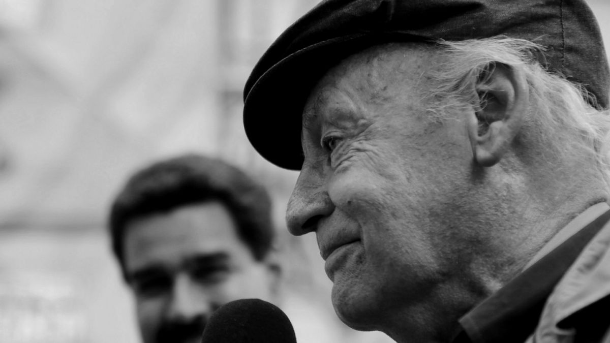

Eduardo Galeano
Eduardo German Maria Hughes Galeano fue un periodista y escritor uruguayo, ganador del premio Sting Dagerman, considerado como uno de los mas destacados artistas de la literatura latinoamericana
Por Ursula Reyes
INICIOS
Eduardo Germán Hughes Galeano nació en Montevideo el 3 de septiembre de 1940, era hijo de Eduardo Hughes Roosen y de Licia Ester Galeano Muñoz, de quien tomó el apellido para firmar como escritor o periodista. Cuando era un adolescente comenzó a publicar caricaturas para El Sol, un periódico socialista en Uruguay, con el seudónimo de "Gius", también fue obrero en una fábrica de insecticidas y pintor de carteles entre otros oficios, a pesar de provenir de una familia de la clase alta. Se inició como periodista a comienzos de 1960 como editor del semanario Marcha y del diario Época luego del golpe de Estado en su país del 27 de junio de 1963 fue encarcelado y posteriormente se instaló en la Argentina.
"La Casa Blanca será la casa de Obama pronto, pero esa Casa Blanca fue construida por "esclavos negros". Y me gustaría y espero que él nunca lo olvide"
Galeano sobre la presidencia de Barack Obama.
"La Casa Blanca será la casa de Obama pronto, pero esa Casa Blanca fue construida por "esclavos negros". Y me gustaría y espero que él nunca lo olvide"
Galeano sobre la presidencia de Barack Obama.
EXILIO
Una década después fue el director de la revista cultural y política Crisis, fundada por Federico Vogelius (1919-1986): "Fue un largo acto de fe en la palabra humana solidaria y creadora (...) Por creer en la palabra, en esa palabra, Crisis eligió el silencio. Cuando la dictadura militar le impidió decir lo que tenía que decir, se negó a seguir hablando", dijo al cierre en agosto de 1976. Ese mismo año, su nombre integró la lista de condenados por la dictadura militar argentina, presidida por Jorge Rafael Videla, y viajó a España. Allí escribió la trilogía "Memoria del fuego" (Los nacimientos, 1982; Las caras y las máscaras, 1984, y El siglo del viento, 1986) donde revisita la historia del continente latinoamericano. Contrajo matrimonio tres veces: la primera, con Silvia Brando, con quien tuvo una hija, Verónica Hughes Brando; luego, con Graciela Berro Rovira, con quien tuvo dos hijos: Florencia y Claudio Hughes Berro; finalmente, con Helena Villagra que sería su mujer durante 40 años y a cuya hija, Mariana, la "Pulga" de sus libros, asume como propia
En 1985 regresó a Montevideo cuando Julio María Sanguinetti asumió la presidencia del país por medio de elecciones democráticas, junto a Mario Benedetti, Hugo Alfaro, entre otros funda el semanario Brecha. Y luego su propia editorial El Chanchito. Además, integró la "Comisión Nacional Pro Referéndum" (entre 1987-1989), constituida para revocar la Ley de Caducidad de la Pretensión Punitiva del Estado, promulgada en diciembre de 1986 para impedir el juzgamiento de los crímenes cometidos durante la dictadura militar en su país.RECONOCIMIENTOS
En enero de 2006, Galeano se unió a figuras internacionales como Gabriel García Márquez, Mario Benedetti, Ernesto Sabato, Thiago de Mello y Carlos Monsiváis, en la demanda de soberanía para Puerto Rico. Además, firmaron en la proclamación de independencia del país. El presidente venezolano Hugo Chávez -en abril de 2009- entregó una copia de "Las Venas Abiertas de América Latina" -libro que fue prohibido en su momento por varias dictaduras latinoamericanas- al presidente estadounidense Barack Obama durante la quinta Cumbre de las Américas, celebrada en Puerto España, Trinidad y Tobago. Padecía cáncer de pulmón desde 2007, esto lo había obligado a reducir sus apariciones públicas, a pesar de lo cual siguió participando en diferentes eventos. Luego de estar internado una semana a raíz de su enfermedad, falleció el 13 de abril de 2015, en su natal Montevideo.